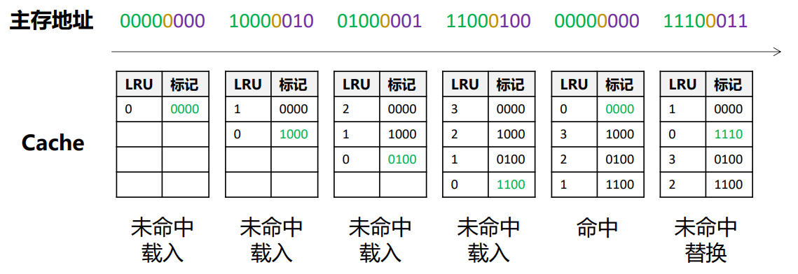
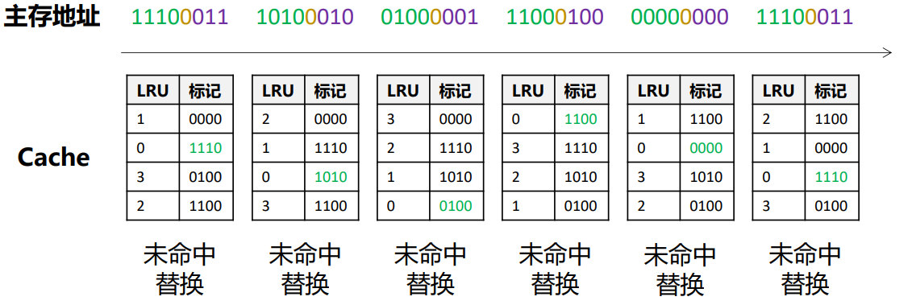
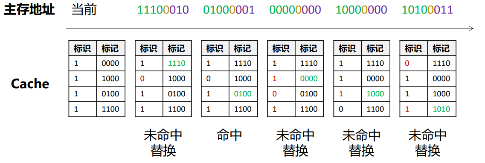

高速缓存存储器(Cache)
存在的问题：CPU的速度比内存的快，两者差距不断增大（内存墙）
解决方法：使用Cache
Cache基本思路
在使用主存之余，添加一块小而快的Cache，位于CPU和主存之间，存储主存中最经常被访问的信息副本
CPU访问一块内存（字）：
- 先检查Cache中是否存在。
- 存在：命中，直接把这个字返回CPU；
- 不存在：未命中，再访问内存，取出这个字，然后把这个字写入Cache中
Cache通过标记来标识它在主存中的对应位置。这里标记就是内存地址中的高位的几个位。
程序访问的局部性原理
- 时间局部性：在相对较短的时间内重复访问特定的信息（一条指令一旦执行就有可能在不久后再次执行）
例如以下代码：
1 | int factorial = 1; |
- 空间局部性：在相对较短的时间周期内，访问相邻存储位置的数据（一个存储单元被访问，它附近的存储单元也很快被访问）
例如以下代码：
1 | for (int i = 0; i < num; i++) { |
Cache 相关信息
-
每次Cache内容被替换时，传送的是整个块（相当于Cache中的一行）而不是一个字，但是访问还是只访问一个字。
-
平均访问时间：假设p是命中率，是cache的访问时间，是主存的访问时间，使用cache时的平均访问时间为:
-
如果想要，必须要求
未命中原因：
- 义务失效：第一次访问一个块
- 容量失效：存不下整个要访问的整体，导致一部分总是不在块中，重复访问时一直重复替换
- 冲突失效：多个存储器位置映射到同一Cache位置
Cache具体实现
映射功能
存在以下的映射方式，不同的映射方式对应不同的内存地址的组成
- 直接映射
- 全关联映射
- 组关联映射
1、直接映射：

主存地址：标记+Cache行号+块内地址
直接映射到Cache中某个具体的行
- Cache行号：Cache的行的数量需要几位表示，Cache行号就有几位
- 块内地址：Cache中每一个块（一行）的数量需要几位表示，块内地址就有几位
- 标记：内存地址减去Cache行号和块内地址剩下的就是标记位
2、全关联映射

主存地址：标记+块内地址
不映射，直接找整个Cache
3、组关联映射

主存地址：标记+组号+块内地址
映射到Cache中某个组（包含多个行）
注意：这三种映射方式都可以归类为组关联映射，直接映射就是每组只有一行的组关联，全关联就是一组就是一整个Cache的组关联
替换算法
Cache满时有新的块进入Cache时需要替换旧的块
- 最近最少使用算法：LRU
- 先进先出算法：FIFO，
- 最不经常使用算法：LFU，
- 随机替换算法：Random
1、最近最少使用算法：
替换最久没有访问过的块；当同一组中的某行被访问时，将其LRU位设为0，同时将其他行的LRU+1。每次替换掉LRU位最大的行中的数据块，并将该行LRU设为0


2、先进先出算法
按顺序进按顺序出，总之就是按顺序。替换掉Cache中停留时间最长的块，需要使用FIFO位。当同一组中的某行被替换时，将其标识位设为1，同时将其下一行的标识位设为0。每次替换掉标识位为0的行中的数据块。

3、最不经常使用算法
替换被访问次数最少的块（可能会造成被替换的块一直被重复替换）。需要为每一行设置计数器。每次替换掉计数器最小的块
4、随机替换算法
随机替换cache中的数据块，在性能上只稍逊于使用其它替换算法‘
写策略
当修改数据时，我们需要考虑修改内存和Cache。
- 写直达
- 写回
1、写直达
写操作时内存和Cache同时进行，即把新数据写入Cache中时就写到内存中去
但是会产生大量的主存访问，减慢写操作
2、写回
先更新cache中的数据而不写入内存中。当cache中某个数据块即将被替换时，再把这个被修改的块写回主存
需要使用脏位（修改位）来表示块是否被修改过。
会导致部分主存数据不是最新的，电路设计复杂
缓存未命中的写策略
- 写不分配：直接将数据写入主存，无需读入cache，通常搭配：写直达
- 写分配：将数据所在的块读入cache后，在cache中更新内容，而暂时不修改主存，通常搭配：写回法
行大小
随着Cache每行的大小增加，从1增加到全部，会导致命中率先增加后减小
- 最开始：数据块包含更多数据，利用空间局部性
- 后面：行数变少，装入Cache数据块变少，数据块被频繁替换
多级Cache
一级Cache未命中后访问二级Cache
Cache中每行的具体内容
- 有效位：1位
- 标记位
- 数据位：一个块中有多少数据
- 脏位（写回算法使用）：1位
- 部分替换算法需要的位（没有说明则不用考虑）